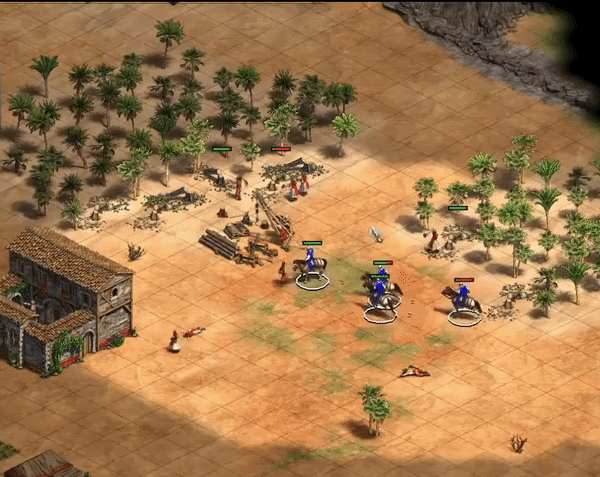

Lo peor que le podemos hacer a nuestra democracia es limitar la reelección de los legisladores y destruir a los partidos políticos
Usa la idea de los «bandidos estacionarios» de Mancur Olson para explicar por qué limitar la reelección acorta el horizonte de los políticos, y por qué los partidos ayudan a frenarlos.
Para entender por qué limitar la reelección de los legisladores y destruir a los partidos políticos es tan malo para la democracia, tenemos que entender una analogía, creada por el famoso economista Mancur Olson, sobre la creación del estado. En su libro Power and Prosperity (2000) Olson describe cómo todo tipo de gobierno proviene de lo que él llama “bandidos” (sí, en serio es, les juro). Y el ejercicio que él se propone, es explorar ¿qué incentivos podemos crear para que los bandidos roben lo menos posible a los ciudadanos?
Según Olson, el peor tipo de bandido es lo que él llama los “bandidos que rondan.” Imaginen que viven en un pequeño pueblo rural en épocas medievales. Los bandidos que rondan podrían ser un grupo armado de personas que vienen a tu pueblo, roban las vacas, destruyen las casas y roban todo lo que el pueblo tiene de valor. Como estos bandidos van a seguir de largo después de robar los bienes, no tienen ni el mínimo interés en el bienestar de los aldeanos. Lo único que quieren es robar lo máximo posible, en el menor tiempo posible, para después seguir al próximo pueblo y hacer lo mismo. Los pobres aldeanos expuestos a este tipo de bandidaje tendrían muy pocos incentivos de invertir en sus terrenos, ya que cualquier inversión que hagan hoy, y cualquier ganancia que consigan a partir de esas inversiones, fácilmente podrían ser destruidos y/o robados por los bandidos que rondan. Los bandidos que rondan, entonces, son terribles para la economía del pueblo.

La posible alternativa a los bandidos que rondan, se imagina Olson, es un “bandido estacionario” que también roba al pueblo pero decide quedarse en el pueblo para robarlo por mucho tiempo. Olson argumenta que este arreglo sería preferible para los aldeanos. Por un lado, tener un bandido estacionario significaría que ese bandido protegería al pueblo de los bandidos que rondan haciendo que el robo sea más estructurado y predecible para los aldeanos—posiblemente hasta llamando al robo “impuestos.” También, como el bandido estacionario quiere robar al pueblo por mucho tiempo, ese bandido tiene incentivos para mínimamente mantener el bienestar del pueblo, porque si al pueblo le va demasiado mal, entonces él va a tener menos riqueza para robar. Olson dice que el bandido estacionario tiene un incentivo de cuidar de su pueblo, como el dueño de una casa tiene incentivos para mantener la casa y pintar las paredes. Para los aldeanos, un bandido estacionario—un dictador—es mejor que una serie de bandidos que rondan.
La moraleja de la historia de Olson, es que lo que se puede puede hacer para que los bandidos no roben tanto es darle a los bandidos lo que en economía se llama un “horizonte de tiempo largo,” porque cuando los bandidos tienen un “horizonte de tiempo corto,” como los bandidos que rondan, éstos tienen mayores incentivos de robar de una manera más destructiva.
¿Y qué tiene que ver esto con la reelección de los legisladores?
Yo no tengo interés en llamarle bandidos a los legisladores, y el punto de este artículo no es hacer un escrache—si quieren eso, hay grandes porciones de twitter dedicados a eso—pero se esperaría que los efectos del horizonte del tiempo sobre el comportamiento de los bandidos sea similar a sus efectos sobre el comportamiento de los legisladores. Es por esto que limitar la reelección de los legisladores puede ser tan malo. Los límites a la reelección legislativa crean horizontes de tiempo más cortos para los legisladores—como los que tenían los bandidos que rondan—y por esa razón estos límites promueven un comportamiento más particularista y destructivo por parte de los legisladores.
Por ejemplo, si un legislador tiene la oportunidad de ser reelecto en las próximas elecciones, entonces ese legislador tiene un incentivo de al menos fingir representar lo que los ciudadanos quieren para que el pueblo premie esta representación reeligiéndolo. En contraste, si un legislador ya no puede correr para reelección, ese legislador va a tener incentivos de robar lo más posible y lo más rápido posible, para aprovechar al máximo su poder político antes de que se acabe. Con horizontes de tiempos largos, creados por la oportunidad de poder ser reelegido indefinidamente, los legisladores si roban (o si cobran impuestos), por lo menos tienen incentivos de robar (o cobrar impuestos) de a poco por mucho tiempo y de una manera que no sea tan evidente que el pueblo se movilice para sacarlo del cargo a él/ella o a su partido. En contraste, un legislador que va a perder su poder sin importar lo que haga, tiene mayores incentivos de robar lo más posible en el tiempo más corto posible.
¿Y qué tiene que ver esto con los partidos políticos?
Hasta si un legislador puede ser reelecto por toda su vida, en algún momento va a querer irse de la política. Por esta razón, el horizonte de tiempo de un individuo puede alcanzar como máximo el largor de la carrera política de ese individuo. Pero cuando ese individuo ya esta listo para salir de la política, ¿eso no crea incentivos para robar lo más posible en el tiempo más corto posible ya que está de salida?
Sí. Absolutamente.
Pero aquí es donde entra la utilidad de los partidos políticos. El Partido Colorado y el Partido Liberal existen desde 1887—mucho antes que la democracia paraguaya se haya establecido—y lo más probable es que (ojalá) se mantengan por mucho tiempo más. Porque los partidos políticos sobreviven por mucho tiempo más que cualquier individuo, entonces estas organizaciones tienen un horizonte de tiempo extremadamente largo. Estas organizaciones sirven como un control a los horizontes de tiempo más corto de los individuos.
Por ejemplo, un legislador que se está a punto de retirar igual podría tener incentivos de robar lo máximo posible en el tiempo más corto posible ya que no hay forma que los votantes le castiguen por ese comportamiento irresponsable. Pero los votantes aún pueden castigar a su partido como un todo por el robo de un individuo. Entonces el partido tiene interés en prevenir que un individuo actúe de manera cortoplacista si eso amenaza la sobrevivencia a largo plazo del partido. En otras palabras, los partidos políticos traen la estabilidad de los bandidos estacionarios, porque los partidos políticos están en Paraguay para quedarse. Los políticos paraguayos del momento van y vienen con intereses individuales, pero las organizaciones partidarias se mantienen, y como organizaciones que tienen un horizonte de tiempo infinitamente largo, estas organizaciones tienen incentivos muy fuertes en hacer que el régimen de robo (impuestos) estatal sea organizado y no tan alto, mientras que el robo (régimen de impuestos) proveniente de políticos apartidarios y con límites a sus reelecciones probablemente sería mucho mayor y destructivo para el país como un todo, ya que estos políticos serían aún más particularistas y cortoplacistas que los que ya tenemos.
Conclusión
El punto principal que quiero comunicar en este artículo, es que si decidimos hacer que los horizontes de tiempo de los legisladores sean cortos—eliminando la reelección legislativa—eso probablemente va a llevar a que los legisladores sean (aún más) cortoplacistas y particularistas. Puede que mis argumentos no hayan convencido a algunos lectores, y a estos les pido que se miren en el espejo y se hagan la siguiente pregunta: ¿si mañana le dicen que solo tiene tres meses de vida, va a seguir siendo igual de responsable de lo que es hoy? ¿Va a seguir ahorrando? ¿Va a trabajar 5 días a la semana? ¿Va a pagar todas sus deudas a tiempo? Mi argumento es que lo más probable es que no. Las personas que tienen un horizonte de tiempo corto tienden a ser más irresponsables porque no tienen nada que perder. Es más probable que alguien que tiene solo tres meses de vida renuncie su trabajo y gaste toda su plata en experiencias placenteras, como tal vez viajes. El cortoplacismo no promueve la responsabilidad del individuo.
De la misma manera, un legislador que sabe que va a perder su poder en tres meses tiene los mismos incentivos que un paciente terminal en comportarse de manera irresponsable. Este legislador puede malversar fondos, puede pasar leyes particularistas, puede utilizar su poder para favorecer a sus amigos(as), y puede llevar a cabo una serie de comportamientos más para aprovechar el poco tiempo de poder que le queda. Los legisladores, en este sentido, son simplemente como cualquier ser humano más. Enfrentados con horizontes de tiempo cortos, los legisladores tienen incentivos de ser irresponsables.
Una parte de la solución a este problema es permitir que los legisladores sean reelectos indefinidamente y fortalecer a los partidos políticos. Cuando los legisladores pueden ser reelectos indefinidamente tienen horizontes de tiempo más largos, éstos tienen mayor incentivos para ser responsables. También, los partidos como organizaciones tienen vidas más largas que cualquier individuo que los compone. Entonces estas organizaciones tienen horizontes de tiempo mucho más largos que cualquier individuo, y tienen el potencial de contrarrestar los incentivos cortoplacistas que cualquier legislador en particular enfrenta.
Segundo, y para ser claros, aunque Olson argumenta que los bandidos estacionarios (los dictadores) son más responsables que los bandidos que rondan por sus horizontes de tiempo más largos, Olson no cree que la dictadura es superior a la democracia. Aunque el robo organizado de los dictadores es preferible para los aldeanos que el robo desorganizado de los bandidos que rondan, los bandidos estacionarios aún tienen un incentivo de robar lo máximo posible a los aldeanos—llevando a que el sistema tenga un régimen de impuestos muy altos. Este robo maximalista desincentiva la inversión de los aldeanos ya que nadie tiene incentivos de mejorar una propiedad que después puede ser expropiada por el dictador. Para promover inversiones por parte del pueblo—para tener más riqueza para robar—el dictador podría prometer que no expropiaría propiedades, pero esta promesa no sería creíble mientras el dictador tenga el poder de hacer lo que quiera. Olson argumenta que la única manera de se puede dar seguridad a los aldeanos de que si invierten sus propiedades no serían expropiadas es si se restringe el poder del dictador para que no tenga la capacidad de hacerlo. Por eso la división de poderes y la democracia en general es superior a la dictadura en fomentar el crecimiento económico, porque esa división de poderes da la seguridad necesaria para que los aldeanos se animen a invertir en sus propiedades.